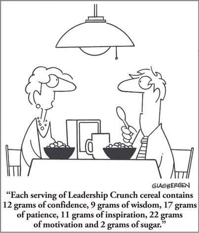

CHAPTER 20
How CEOs Think and Lead: Insights from Research on CEOs Around the World

CHAPTER HIGHLIGHTS
 Senior leadership competencies that will drive success in the twenty-first century are distributed across the four quadrants of the Whole Brain Model.
Senior leadership competencies that will drive success in the twenty-first century are distributed across the four quadrants of the Whole Brain Model.
 An analysis of the thinking preferences of more than 9,300 CEOs around the world shows that today’s CEOs demonstrate a primary preference for each of the four thinking quadrants, but some of those preferences are stronger than others.
An analysis of the thinking preferences of more than 9,300 CEOs around the world shows that today’s CEOs demonstrate a primary preference for each of the four thinking quadrants, but some of those preferences are stronger than others.
 While there are some variations among CEOs across countries, as well as between male and female CEOs, overall the occupation continues to be multi-dominant.
While there are some variations among CEOs across countries, as well as between male and female CEOs, overall the occupation continues to be multi-dominant.
 CEOs have a unique profile that, when leveraged, enables them to get the full benefits of the typical diversity found on their top team(s).
CEOs have a unique profile that, when leveraged, enables them to get the full benefits of the typical diversity found on their top team(s).
The pressure on this CEO and his leadership team was unrelenting. With all eyes on them as they neared the IPO deadline, stress was at an all-time high. The CEO, frustrated by where they were in the process, scheduled an offsite meeting to try to get to the bottom of the problem. This was a group of highly talented people with years of requisite functional experience, so how was it that they could be so siloed in their views of the business, especially when they were all so clearly interdependent? Even worse, their aversion to open debate and their lack of curiosity about one another made team interaction feel like torture. Adding to his irritation, the CEO could see and understand all of the various functional views—they were all obvious to him—yet the individual team members seemed blind to anything outside their own narrow perspective.
Every CEO we have ever worked with has shared a similar complaint. They tell us that while it’s no problem for them to comprehend the intersection of the various functions across the organization, they realize, to their endless frustration, that this is an ability that most of the other people on their team simply don’t have.
Maybe that’s why, with the growing body of research and data we’ve collected over the years from organizations across the globe, we’re often asked this one question in particular: “How do CEOs think?”
What makes CEOs different? What’s the secret sauce? In fact, CEOs are an interesting breed. What’s consistently true is that no matter what changes are taking place in the world—whether it’s the economy, demographics, market trends, technological advances, new regulations, disruptions, catastrophic events, or other internal and external factors—the data reveal that CEOs are different from others in their mult-dominance. On average, they tend to have strong preferences across all four quadrants (a 1-1-1-1 average profile), more so than any other occupational group, even though they often come from a wide range of different functional backgrounds.
The multi-dominance of the CEO may explain the puzzlement that people often feel when they are trying to “psych out” the CEO. To an uninformed observer, multi-dominant preferences can appear both disarming and tough to pin down because of the wide array of interests, approaches, and “clues” that they provide. It also explains why CEOs as a group are so effective at the role they play in overseeing and leading teams composed of a myriad of different specialized functional leaders. In addition, it serves them well in synthesizing and distilling wide-ranging information for their own “bosses,” the board of directors. Their multi-dominance provides them with the ability to translate ideas from the language of one quadrant or function to that of the next and then integrate it all in order to make decisions. This is a crucial skill when the time comes to take action: CEOs have to be able to advance facts and data toward conclusions and articulate concepts and incorporate the human factors into those concepts and synthesize many ideas into a few. The power to lead, engage, and communicate clearly with a variety of internal and external “tribes” in such a way that they work together effectively is the critical competitive work of the CEO.
Studies of the common traits of effective CEOs confirm the prevalence of this breadth of thinking within the top ranks. For example, Adam Bryant, author of The Corner Office: Indispensable and Unexpected Lessons from CEOs on How to Lead and Succeed,1 found that CEOs consistently demonstrate:
• Passionate curiosity. They are alert and engaged with the world, and they want to know more (more D-oriented thinking).
• Battle-hardened confidence. This comes from persistently overcoming adversity (more B oriented).
• Team smarts. They have the ability to recognize the players the team needs and how to bring them together around a common goal (more C oriented).
• An ability to be concise. This is what Bryant calls a simple mindset (more A oriented).
• A willingness to take risks when it is most difficult. In other words, they exhibit fearlessness (more D oriented).
These represent a variety of traits that are rarely found in one individual, but they are typical among CEOs, with their breadth of available thinking.
Another study, by the executive search firm Russell Reynolds Associates,2 examined survey responses from more than 3,700 executives, including 134 chief executives at large companies in North America and Europe. It determined that the top three traits separating CEOs from other leaders are a willingness to take calculated risks, a bias toward thoughtful action, and the ability to read people efficiently. The other six were forward thinking, optimistic, constructively tough-minded, measured emotion, pragmatically inclusive, and a willingness to trust.
Overall, most studies are consistent in that they cite as differentiating characteristics traits that span all four quadrants of the Whole Brain Model. What they reveal is that, in contrast to the many functional leaders who see the world in terms of this or that, CEOs more often see and. As complexity grows and changes hit business at an even faster pace, the nature of the CEO job—and increasingly, that of leaders at all levels—will increasingly demand this kind of “and” thinking.
In fact, when you look at the commonly cited twenty-first century leadership competencies, the need for breadth of thinking is no longer limited to the CEO role. Critical thinking, being able to anticipate change, dealing with ambiguity, and analytical thinking consistently show up. Variations of adaptability, innovation, change orientation, risk taking, and visionary thinking come up repeatedly. With globalization increasing, so is the need for greater cultural competencies and skills like interpersonal sensitivity, team and group management, self-management, and emotional intelligence. And finally, focus, execution, and managing priorities in a chaotic world are skills that every company needs now more than ever. When you organize these commonly cited competencies across the four quadrants of the Whole Brain Model (see Figure 20-1), it’s obvious that all leaders need to be able to access and apply all thinking preferences and consciously shift their thinking depending on the needs of the situation. (For more on Whole Brain Leadership, see Chapter 14.)
FIGURE 20-1 Critical twenty-first century leadership competencies based on a literature review. These are placed based on the primary emphasis of the competency by quadrant, with those in the center requiring all four quadrants.3
Thinking Preferences of Twenty-First Century CEOs
CEOs seem to be better designed for the challenge of shifting their thinking from moment to moment. So how do they think? And to what extent do today’s CEOs demonstrate an ability to think across the quadrants? Has their profile changed in comparison to what we found in a similar study that we conducted in the mid-1990s? We dug into the data to find out.
Analyzing data from our international database of CEOs, we looked at their preferences as a group, then drilled down further to see if there were differences among countries or between males and females, and finally, looked at how the data have changed since our last study. Here’s what we found.
Our sample consisted of data on 9,300 CEOs who had completed the HBDI assessment between January 1, 2000, and May 31, 2014. These CEOs represent a variety of industries, including, but not limited to, life sciences, retail, architecture and engineering, social sciences, finance, technology, consumer packaged goods, and general business. Hailing from 76 countries, including Australia, Canada, Denmark, France, Germany, India, China, South Africa, and the United States, the CEOs ranged in age from 30 to 86, with an average age of 49. Of the group, 80 percent were male and 20 percent were female.
Overall, although the average shows strong preferences across all four quadrants, when we looked at the data more closely, the strongest preferences showed up for visionary thinking, with the highest overall average being in the D quadrant (see Figure 20-2).
FIGURE 20-2 Average of thinking preferences of twenty-first century CEOs (n = 9,300).
One of the most powerful sections of the HBDI is the forced ranking of 16 work elements, which represent the types of tasks or activities that someone might have to do to perform his or her job (for example, problem solving, innovating, or teaching/training). The work element that was ranked by all CEOs (both male and female) as the work they do best was problem solving (see Figure 20-3), which does not come as a surprise in light of the varied responsibilities that CEOs carry. In today’s environment, at the CEO level, this is more about managing dilemmas in an ambiguous and chaotic environment than about traditional problem solving.4 In comparison to the similar CEO study that we conducted in 1996, this finding is consistent for males but represents a change for female CEOs, who had previously ranked organization as their number one work element.
FIGURE 20-3 Work elements: CEOs across the globe.
The element ranked second-highest by males and fourth by females is conceptualizing, up from the fourth-highest ranking overall in our earlier research. Conceptual thinking is the ability to understand a situation or problem by identifying patterns or connections and addressing key underlying issues.5 This corresponds to today’s need to see patterns and trends at a strategic level, and the ability to then generalize the business implications.
Expressing ideas ranked as third-highest for female CEOs (after interpersonal) and fourth-highest for males, a change from sixth and seventh place, respectively, in the previous study. When you consider the high visibility of today’s CEOs as visionary communicators who need to be able to engage effectively with others and communicate new ideas, this work focus makes sense. The ranking of interpersonal as second for female CEOs versus sixth for males aligns with recent Zenger Folkman research6 showing that women leaders outrank men in their ability to build relationships, collaborate, team, inspire, motivate, and develop others. The focus and preference for interpersonal interaction among female CEOs helps explain those data.
Analytical ranks third for male CEOs, in contrast to ninth for females. Often developed earlier in their careers, analytical thinking and the ability to break things down is useful in an age in which big data is emerging as a growing trend and critical thinking is an important part of the executive function. Clearly less preferred by females, analytical has dropped from fifth to ninth place among women compared to our earlier research. The bottom two for both male and female CEOs are administrative and technical aspects. These are activities that are most likely delegated to a large extent, although some degree of technical fluency and technological savvy is required to navigate today’s world and understand the business landscape.
Of potential concern is the finding that teaching/training is among the bottom four elements (out of 16) for all CEOs. This data point mirrors the recent CEB study indicating that only 13 percent of organizations are looking closely to understand how they best learn.7 This finding is potentially the most worrisome, as companies are facing huge knowledge gaps as these CEOs and a large wave of baby boomers who are currently in the leadership ranks begin to retire. While there’s been plenty of talk about addressing the looming “leadership crisis,” CEOs can’t outsource this task entirely. They need to take an active role in mentoring, developing, and transferring their knowledge and expertise to the next generation and, most important, making sure that this is a top priority for the organization. The development side of the talent challenge is clearly before us, and CEOs must take the lead in making learning the new fuel for organizational growth.
It is interesting to note that, in general, the activities related to B-quadrant thinking ranked the lowest, although organization appeared in the top four for CEOs in Germany and China, possibly because of cultural differences. Of all of the B-quadrant characteristics, however, organization is ranked highest overall (in the eighth position), a change from the study we conducted in the 1990s, when it was number two for males and number one for females. The advent of technology and support systems that facilitate organization, along with the continued pressure to focus more on the big picture and global concerns, most likely contributed to this shift. As discussed in Chapter 14, this lower emphasis on B quadrant aspects is also consistent with the types of work that require the attention of leaders as they progress through the Leadership Pipeline developed by Ram Charan, Stephen Drotter, and James Noel.8 As leaders progress up the pipeline to a senior level, the more tactical, B-quadrant aspects are delegated to other people in the organization and are gradually overtaken by a need for more strategic, “big-picture” D-quadrant thinking.
Our data show that, although most managers include problem solving in their top five, in contrast to CEOs, their top five also includes planning, organization, and/or implementation. Managers as a whole have either creative or innovating-both important twenty-first century competencies, in the bottom five. This not only highlights the differences between leading at the C-level and managing, but also shows that these managers will have to stretch outside their mental comfort zones and potentially draw on less-preferred thinking styles if they are to develop into successful leaders of the future.
A Closer Look: Country-by-Country Differences
Does a CEO’s cultural context affect his or her thinking preferences? Figure 20-4 shows the composite averages for both male and female CEOs from each of 12 countries that provided sufficient data to consider them representative. The similarities in the overall HBDI profiles indicate that there’s a relatively uniform distribution of mental preferences for the CEO occupation worldwide. One noteworthy finding was that, on average, CEOs from Singapore appeared to favor the A quadrant more than CEOs from other countries did. The remaining quadrants were relatively similar across the 12 countries, confirming the consistency in breadth of thinking that we saw in the CEO study we conducted in the mid-1990s: wherever you are in the world, the role still requires a multi-dominant approach—and more so today than ever.
FIGURE 20-4 Average profiles of CEOs by country.
CEO preferences in the work elements section by country are fascinating. Consistent with our previous CEO research, in 11 of the 12 countries, problem solving is the universal choice as the top work element (for France, it is ranked 2). As mentioned earlier, in our current world, problem solving is no longer just a logical, cut-and-dried process. The multi-dominant profile tends to broaden the approach, making it more of a Whole Brain process than would naturally occur in profiles with less breadth.
Other elements that are at the top across the world include conceptualizing, expressing ideas, innovating, and analytical. However, unlike problem solving, there are country-by-country differences for each of these. For example, conceptualizing is ranked much lower than the overall average (it is internationally ranked second) for the European countries of France (where it is ranked tenth), Denmark (ranked seventh), and Switzerland (ranked fourth). And although expressing ideas is ranked third internationally, it’s near the top of the list for some countries (for example, the United States, the United Kingdom, and Australia) and in the middle for others (for example, China and Singapore). Analytical is near the top for most countries, but the United States, the United Kingdom, and Australia all rank it at six or seven. These CEOs seem to place greater emphasis on strategic aspects (for example, conceptualizing and innovating) and people aspects (for example, interpersonal and expressing ideas) than on analytical aspects.
Innovating appeared in the top six in all countries except Germany, Switzerland, and China. Interestingly, in contrast, creative aspects ranked lower across the board, landing in the middle between the seventh and fourteenth position out of sixteen (the average was 9.5) for all countries except France (where it ranked fifth). This is consistent with our previous CEO study, which means that although innovation is ranked higher, we are not seeing an increase in the ranking for creativity—even though, according to IBM’s most recent CEO study, creative thinking was cited among the top three traits sought out in employees.9 One probable reason for this is that innovation feels less risky than creative thinking. Since innovation requires creative thinking, this presents an interesting leadership dilemma. (For more on creative thinking, see Chapters 21 to 23.) For CEOs, creative thinking is even more important today than it was in previous years, since it represents a very effective way to deal with change, which is now a given and happening at a faster rate than ever before. Today’s CEOs also have to be able to lead and facilitate the typically diverse top team as well as set the tone for the open debate and creative contention necessary to generate the best possible ideas. Research by McKinsey has shown that top teams benefit from this diversity:10
Between 2008 and 2010, companies with more diverse top teams were also top financial performers. That’s probably no coincidence….
The findings were startlingly consistent: for companies ranking in the top quartile of executive-board diversity, ROEs [returns on equity] were 53 percent higher, on average, than they were for those in the bottom quartile. At the same time, EBIT [earnings before interest and tax] margins at the most diverse companies were 14 percent higher, on average, than those of the least diverse companies. The results were similar across all but one of the countries we studied; an exception was ROE performance in France; but even there, EBIT was 50 percent higher for diverse companies.
From our experience and through our research on team diversity, we know that it takes skilled, effective leadership to make those highly diverse teams so successful (see Chapter 12 for more on teams). With their breadth of thinking, CEOs are uniquely positioned to be able to take on this challenge.
In terms of work elements that are consistently ranked low, administrative is ranked in the bottom four in all countries and is last or second to last in 10 of the 12 countries, while technical aspects is in the bottom four (12 to 16) for CEOs in all 12 countries—consistent with our previous study. Again, we believe that these work elements represent work activities that are largely delegated to others rather than being carried out by the CEOs themselves. The drop in ranking for administrative, which was previously ranked between 9 and 12, is indicative of the probable impact of technology on eliminating much of the administrative burden on senior leaders. At the same time, though, with technical aspects currently being in the bottom four, some C-level leaders (for example, baby boomers or those less comfortable with new technology) may be relying on support staff to handle more complex technology-related needs.
Of great importance is the finding that teaching/training is in the bottom four on the list for CEOs in 11 out of 12 individual countries. Again, the need for the CEO to pay attention to the development needs of the top team, as well as to set the tone and priority in the culture for continued learning, reassessment, and growth, may be at risk if these organizations do not have a strong voice at the table driving learning, knowledge transfer, coaching, and development.
When you think about how globally integrated the economy and business are today, it’s both fascinating and valuable to understand the similarities and differences in CEOs over this wide range of countries. Every business runs on thinking, and it starts with the CEO. Having a better understanding of the lens through which CEOs from different countries view the world, their work, and others allows you to have context for the decisions, direction, and general tone established by each CEO you interact with.
A Closer Look: Gender Differences in CEO Thinking Preferences
What about male versus female CEOs? As discussed earlier, differences do exist in the overall profiles. We found that in three of the four quadrants, there was a statistically significant difference: male CEOs showed a stronger preference for the A quadrant than did female CEOs, while females scored stronger preferences for the C and D quadrants than did their male counterparts (see Figure 20-5). The A and C differential is consistent with our overall HBDI database studies, although the higher D quadrant in females is unique to female CEOs.
FIGURE 20-5 Comparison of male (n = 7,823) and female (n = 1,749) twenty-first century CEO thinking preferences.
Another section of the HBDI shows that female CEOs selected intuitive as the strongest general descriptor of themselves, with logical as the second, whereas males selected intuitive second and logical first. This, combined with the fact that more than two-thirds of both male and female CEOs agreed with the statement, “I rely on hunches of rightness or wrongness when moving toward a solution,” and three-fourths agreed that “I can frequently anticipate the solutions to my problems,” demonstrates how much all CEOs rely on their intuition, after having gathered all the facts, engaged with team members, envisioned the options, and looked at implications, to develop the best possible solution. This rings true given my experience, both as a CEO and working with them: when all else fails and no more input is available, the CEO often steps outside and draws a conclusion based on his or her brain’s synthesizing everything it has processed, heard, and learned.
More than two-thirds of the CEOs, both male and female, rated themselves as extroverts, while close to 13 percent described themselves as being down the middle—what’s sometimes called “ambivert.” Only 3 percent of females identified themselves as introverted compared to 18 percent of males. An interesting finding is that there is a significantly stronger C-quadrant score for extroverts, while the A-quadrant score is higher for introverts. Validating this shift is the placement of interpersonal as a work element for introverts—it is ranked eleventh out of sixteen, versus being ranked third for extroverts.
As the number of female CEOs continues to grow, and as the Zenger Folkman research has shown, the preferences of female CEOs do provide a potential advantage in the competency domains of emotional intelligence, engagement, collaboration, teaming, and coaching, all very important. However, it’s important to note that these differences don’t imply that one gender is better equipped to be an effective CEO. First, there was a large amount of individual variability—some males were higher in the C quadrant than the average female, and some females were higher in the A quadrant than the average male. Second, the twenty-first-century leadership competencies and CEO success traits are distributed across the entire Whole Brain Model. That means that all CEOs must be able to capitalize on their strong preferences and apply less-preferred styles based on changing and often unpredictable demands. Regardless of gender, ethnicity, age, and any other demographic or biological characteristic, all leaders today need to be situationally whole if they are to be successful.
The Multi-Dominant CEO
As we’ve seen consistently since we began keeping data on CEO thinking preferences, and as these more recent data confirm, on average, CEOs continue to have well-balanced profiles—a good sign when you consider what it takes to lead the top teams and an organization through the complexities and challenges of twenty-first-century business. Consistent with previous studies, CEOs with strong preferences for the A-quadrant analytical, technical, and financial aspects of leadership tend to least prefer the C-quadrant interpersonal and emotional aspects. Likewise, CEOs in this study who strongly prefer the B-quadrant safekeeping, administrative, and task-accomplishment aspects of leadership have a tendency to least prefer the D-quadrant strategic and innovative aspects of leadership. As we discussed in Chapter 3, a lack of preference for certain modes of thinking will have consequences for performance and effectiveness, just as a strong preference will (see Figure 20-6).
FIGURE 20-6 Examples of leadership obstacles stemming from low preference.
The Power of “And”
Most CEOs around the globe have both the burden and the advantage of taking the “wide view,” one that encompasses all four quadrants. The prevalence of that multi-dominant profile at the top is great news because the role of CEO clearly requires it, especially given the focus on innovation that every company needs today. Those CEOs who do not themselves have this natural breadth of thinking must seek to develop it and/or partner with a complementary thinker or thinkers to expand their brain bandwidth. There are numerous examples in business of just such C-level partnerships. As Darrell K. Rigby, Kara Gruver, and James Allen wrote in their Harvard Business Review article “Innovation in Turbulent Times”:11
The world’s most innovative companies often operate under some variation of a both-brain partnership. In technology the creative partner might be a brilliant engineer like Bill Hewlett and the business executive a savvy manager like David Packard. In the auto industry the team might be a “car guy” like Hal Sperlich—a major creative force behind both the original Ford Mustang and the first Chrysler minivan—and a management wizard like Lee Iacocca. The former track coach Bill Bowerman developed Nike’s running shoes; his partner, Phil Knight, handled manufacturing, finance, and sales. Howard Schultz conceived the iconic Starbucks coffeehouse format, and CEO Orin Smith oversaw the chain’s rapid growth.
They go on to mention Apple as the company with the best-known “both-brain partnership,” with CEO Steve Jobs having played the role of creative director, shaping everything from product design and user interfaces to the customer experience at Apple’s stores, while COO Tim Cook handled the day-to-day running of the business. Now Cook is leading the enterprise, surrounding himself with other complementary thinkers. These examples show how any leader can expand his or her thinking to live and operate successfully in the CEO’s world of “and.” The key, however, is recognizing both your preferences and your mental blind spots.
It is apparent that the occupation of CEO requires a discrete set of interests, preferences, and competencies that are generally consistent across country, cultural, and gender boundaries. That represents both an opportunity and a challenge for most CEOs. Each of us can become a situationally Whole Brain leader, but doing so starts with, and must be developed by you. For those of you who are already CEOs, and for those who aspire to become one, ask yourself: How well are you leveraging your thinking, and, just as important, the thinking of others? As a CEO myself, I know I cannot do it alone. As Justin Menkes stated in his Harvard Business Review article “Three Traits Every CEO Needs,”12 “The best CEOs had been, and continued to be, distinguished by their ability to manifest the very best from their workforce.”
So what about our frustrated CEO from the beginning of this chapter? The offsite turned out to be an eye-opening experience for everyone. As the team members learned about their individual and team HBDI Profiles, the data gave them a clear picture of the group’s diversity. It was apparent that their thinking differences had been creating obstacles to the group’s productivity and its ability to collaborate and engage in creative contention and debate. As each member of the team shared a personal “HBDI autobiography” story explaining his or her background and the context of his or her preferences, I saw the walls between them begin to fall. They realized that, in fact, they had more in common with one another than they had thought, and that the diversity available on the team was a resource that they could each use to expand his or her own thinking. That evening, the vice president of finance pulled me aside to say: “Now I get [the CEO’s] frustration with me.”
The next day, each member defined and shared what came to mind when he or she heard the word conflict. Most used negative language (anger, frustration, danger, and so on). The CEO waited until the end to share his view: “I think conflict is positive, and we need it on this team! It’s an opportunity for me to take advantage of the differences I expect each of you to bring to the table.” Suddenly the group members realized that they had wasted a lot of energy and shortchanged the collective value of the group by not learning to appreciate the differences that each of them brought. Now they were ready to do the work that was needed to become a “first team,” focused on making the leadership team their primary focus rather than getting dragged down into the functional noise. After they discussed and agreed on Whole Brain group norms, the balance of the meeting focused on strategy—and was one of the best they had ever held. Most important, the CEO now knew that he had a team he could count on to perform at a high level as he headed into his time-consuming IPO prep.
And when that IPO turned out to be a huge success, it was clear that the CEO could not have gotten there alone. Now that he had the best brains in the company aligned with him, nothing would stop them!
SO WHAT?
 CEO HBDI data confirm that the role is whole-brained by nature.
CEO HBDI data confirm that the role is whole-brained by nature.
 The demands on CEOs today and the leadership competencies for the twenty-first century require a Whole Brain approach to the job.
The demands on CEOs today and the leadership competencies for the twenty-first century require a Whole Brain approach to the job.
 Much can be learned about the CEO’s “secret sauce” by understanding male/female data, introversion and extroversion differences, and the discrete work elements, both globally and country by country.
Much can be learned about the CEO’s “secret sauce” by understanding male/female data, introversion and extroversion differences, and the discrete work elements, both globally and country by country.
 Despite rapid and ongoing change in the business environment and the broader world, the CEO profile has remained remarkably consistent over the years, a finding that demonstrates how important situational wholeness is for succeeding in the top job.
Despite rapid and ongoing change in the business environment and the broader world, the CEO profile has remained remarkably consistent over the years, a finding that demonstrates how important situational wholeness is for succeeding in the top job.